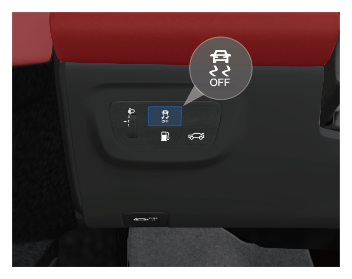

车辆行驶时默认ESP为开启状态。按压按键，可关闭ESP，此时组合仪表上指示灯点亮，并显示报警信息。
车身电子稳定系统（ESP）
车身电子稳定系统（ESP），可有效降低车辆侧滑的危险。
开启和关闭

ESP指示灯
– 整车电源切换至“ON”挡位后， 及指示灯点亮数秒，系统完成自检后熄灭。
及指示灯点亮数秒，系统完成自检后熄灭。
– 行驶过程中如果ESP工作，指示灯闪烁。
– ESP关闭后，指示灯点亮。
– ESP存在故障时，指示灯点亮。
车辆启动后，若指示灯点亮，表明ESP已关闭，组合仪表显示屏显示报警信息，可尝试关闭整车电源，然后再打开整车电源，重新打开系统。当指示灯熄灭时，表明系统已完全进入工作状态。
若断开蓄电池接头与线缆再连接后，打开整车电源时指示灯可能点亮，短距离行驶后指示灯会熄灭。
为了行车安全，应打开ESP。下列特殊情况时，可解除ESP功能：
– 车辆装防滑链行驶。
– 在深雪或松软等路面上行驶。
– 陷于泥泞路等路面，需前后移动。
牵引力控制系统（TCS）
牵引力控制系统（TCS）是ESP的子系统。TCS根据驱动轮的转速及传动轮的转速来判定驱动轮是否发生打滑现象，当前者大于后者时，TCS将抑制驱动轮转速，从而控制车辆防滑。
当关闭或开启ESP时，TCS也随之关闭或开启。
— 页面到底了 —